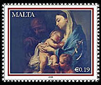
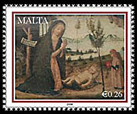
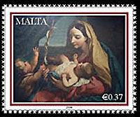
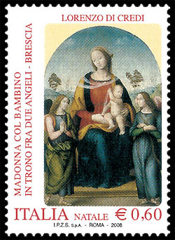
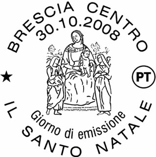
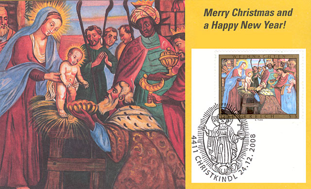
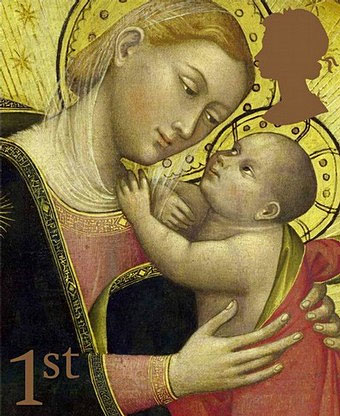
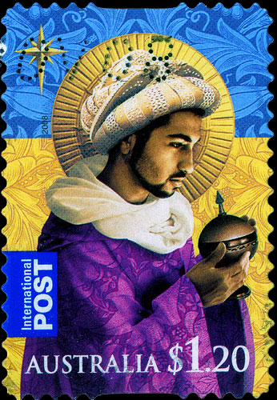

Christmas Art on Stamps 2008
On this page we show the art related Christmas stamps that were issued in 2008. We will start with this year's set of Christmas stamps being issued by the Philatelic Bureau of Malta Post on Thursday 27 November. The set features details from three nativity paintings from the National Museum of Fine Arts in Valletta. The € 0.19 stamp reproduces a painting by Francesco Trevisani (1656-1746) - “Madonna and Child with infant St John the Baptist”. Francesco Trevisani was one of the major late baroque Italian artists active in Rome during his time.



The second stamp, denominated to € 0.26 is a Nativity panel by Maestro Alberto (XVth Century, Northern Italian). This is a detail from a painting on panel featuring the Nativity of Christ. In this detail, the Virgin and Christ child take centre stage in front of a makeshift shed where St Joseph rests.The painting in the € 0.37 and third stamp entitled “Virgin and Child with Infant St John the Baptist” was mastered by Carlo Maratta (1625-1713). Carlo Maratta was a prominent baroque painter active in Rome where he ran an art studio.
The Italian Postal Administration has issued on October 30, 2008 a pair of Christmas stamps. One of them, not shown, features a holiday. The € 0.60 stamp features the painting “Madonna and Child Enthroned with Two Angels” by Lorenzo di Credi, housed at the offices of Banco di
Brescia. The words “MADONNA COL BAMBINO IN TRONO FRA DUE ANGELI - BRESCIA“ Madonna and Child Enthroned with Two Angels – Brescia), “LORENZO DI CREDI,” “NATALE” (Christmas), “ITALIA” and the denomination “€ 0,60” complete the stamp.On the right we show the First Day cancel that was used in the city of Brescia, where the painting is exhibited


Austrian Post. Christmas 2008 - Ceiling Frescoe from Mattsee
The stamp shows a detail from the Adoration of the Magi, the middle painting of the ceiling fresco over the central nave of the Collegiate Monastery and Parish Church of St. Michael in the Three Lakes region of the Flachgau. It is thanks to the energetic Dean Johann Sebastian Wieseinger, who was responsible for the parish from 1680 to 1713, that the high baroque stucco frame by Josef Schmidt was created around 1700. It was also around 1700 that the painting on the stamp was created by an unknown. On the occasion of the renovation of most of the stucco-framed ceiling paintings in 1851 and 1852, the Salzburg painter Josef Rattensperger (1807 – 1866) probably also painted over this fresco in the popular Nazarene style.

The picture above displays parts of the greeting card sent by the Sammler Service, Österreichische Post AG (Collectors Service of the Austrian Post) to its clients. The stamps was cancelled at Christkindl (Son of Christ), the traditional place for the nice Austrian Christmas cancellations.


The Royal Post of Great Britain reissued in 2008 a stamp that it introduced in 2007. This 1st Class stamp displays the painting "The Madonna of Humility" by the Italian master Lippo di Dalmasio, c. 1390 - 1400. Extensive damage and centuries of repairs have dimmed but not eclipsed the grace of The Madonna, crowned with 12 stars, against a disc of golden light, recalling Saint John’s vision of the Woman of the Apocalypse, “clothed with the sun”, in the Book of Revelation.
Just for its beauty we display near to the Madonna one of the three stamps of the Australian Post set that celebrates the birth of Jesus through images of iconic figures from the Christmas story and the Nativity.
Working from a detail of a painting titled “Virgin and Child With the Young John the Baptist” by the Italian master Sandro Botticelli, designer Richard Sheaff of Scottsdale, AZ, created the Postal Service’s 2008Christmas stamp. The painting, tempera and oil on wood, dates to around 1490 and is now in the collection of the Cleveland Museum of Art. It presents one of the most common figural groups in religious art. Botticelli’s beautifully rendered figures capture the tender relationship between mother and child and at the same time suggest Mary’s foreknowledge of Christ’s fate. The facial expression of John the Baptist, seen standing to the side in a prayerful gesture, also suggests a heightened awareness. © 2007 USPS. All Rights Reserved.
The author of this site, Victor Manta from Switzerland, wishes to all stamp collectors Marry Christmas and a Happy New Year 2009!
Links on this site:
Stamps Christmas Tree, with greetings from 38 stamp collectors, in 16 different languages
Liechtenstein, Christmas 2001. Medallions in Wooden Frames
Liechtenstein, Christmas 1979. Embroideries.